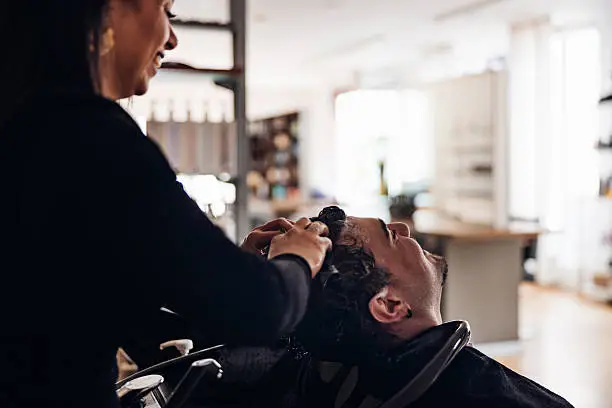
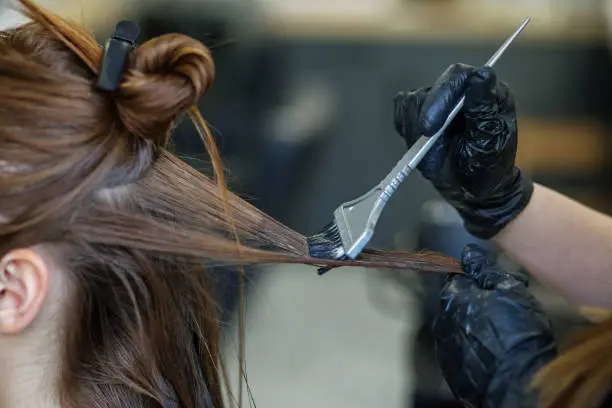

Saç Kesimi
Önce konuşuruz — nasıl bir şey istediğini, günlük hayatını, ne kadar uğraşmak istediğini. Sonra keseriz. Makas ve makine, ikisi de.
₺250
Kadıköy Moda · Berber & Kuaför
Saç, sakal, boya… Hepsini burada, acele etmeden yapıyoruz. Kahveni al, koltuğa otur — gerisini biz hallederiz.
Randevu Al
Moda Caddesi'ndeki dükkanımızda her gün birbirinden farklı yüzler görüyoruz — öğrenciden emekliye, ilk kesimden düğün tıraşına. Hepsine aynı dikkati gösteriyoruz.
Randevu alırsan beklemeden oturursun. Yoksa bazen 15–20 dk beklemen gerekebilir, haberin olsun.
Fiyatlar net, sürpriz yok. Aşağıda gördüğün her şeyi salonumuzda gerçekten yapıyoruz.
Önce konuşuruz — nasıl bir şey istediğini, günlük hayatını, ne kadar uğraşmak istediğini. Sonra keseriz. Makas ve makine, ikisi de.
₺250
Sıcak havlu, köpük, jilet. Sakal hattını yüzüne göre çizeriz — abartmadan, senin tarzına uygun.
₺200
Doğal ton düzeltmeden tam renk değişimine. Boyadan önce saçının durumuna bakarız, gerekiyorsa bakım öneririz.
₺350'den
Küçükler için sabırlıyız. İlk kez gelen çocuklar biraz ürkebilir — o zaman yavaş gideriz, sorun değil.
₺150Saç + Sakal birlikte alırsan ₺400 — en çok tercih edilen bu zaten.
Randevu AlGelmeden önce bir göz at — aynı yer, aynı ekip.





Mehmet, Ali ve Can — üç usta, bir dükkan. 2012'den beri Moda'dayız. Birçoğu yıllardır geliyor; bazıları çocukken gelmiş, şimdi babasıyla birlikte geliyor.
Salonumuz küçük ama samimi. Müzik açık, sohbet serbest. İstersen sessiz oturursun, o da tamam.
Caferağa Mah. Moda Cad. No:42
Kadıköy, İstanbul
Pazartesi – Cumartesi: 09:00 – 20:00
Pazar: 10:00 – 18:00